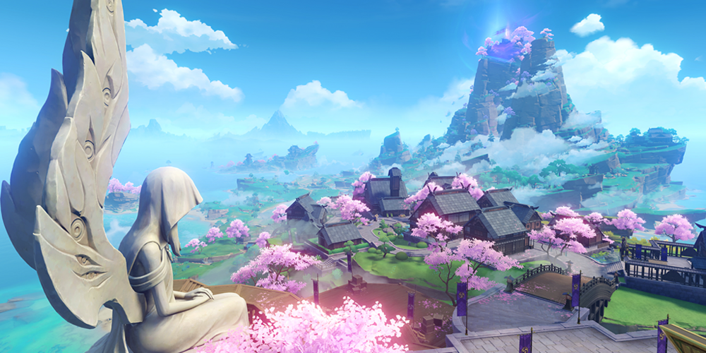
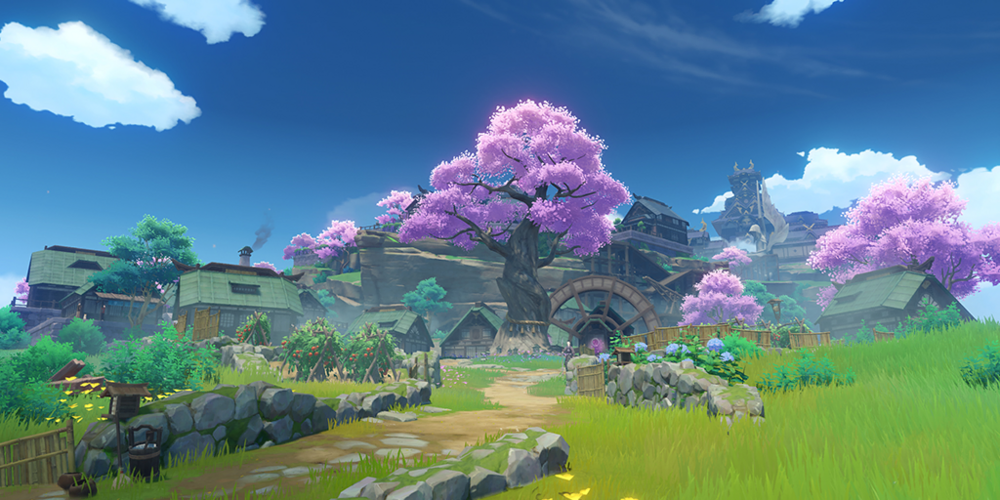
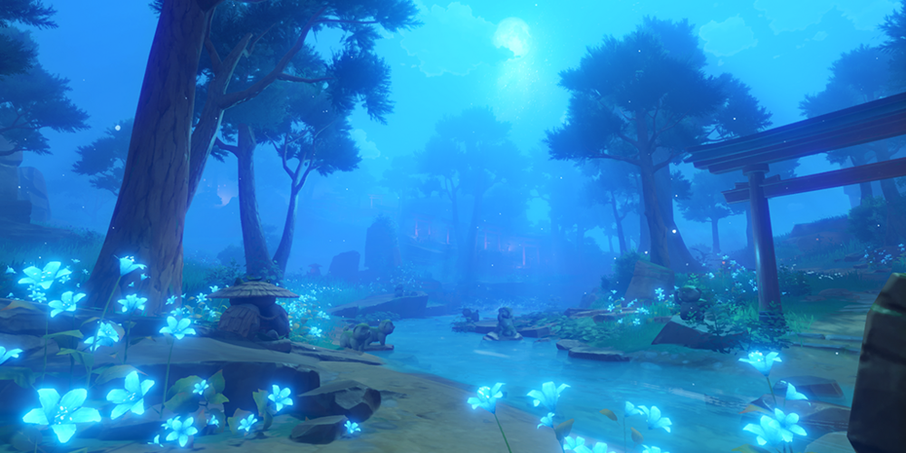

Legend has it that hundreds of years ago, Lord Hiiragi Hiroshi of the Kanjou Commission miraculously built a prosperous trade center from a deserted island, and greatly impressed the Shogun. In the days when the Sakoku Decree was in force, the headquarters of the Kanjou Commission still flourished. However, the merchants from faraway nations languished, and the streets were no longer the bustling appearance of a century ago. Perhaps this is the best reflection of the business of mortals: those who become successful overnight will also lose everything in a day.
Tenryou, Inazuma City: Inazuma City
The many streets and lanes of Tenryou intersect and cross paths, and finally gather in front of the Tenshukaku - the undisputed center of power in Inazuma. Under the eternal and silent gaze of Her Highness the Ogosho Shogun, the people living in the hustle and bustle of the city will finally be free from the worries of obsession, and move to a paradise where they no longer need to chase and compete for their aspirations — but what is the view of the eternal paradise that the Shogun sees

Suburbs, Inazuma City: Inazuma City

The outskirts of Inazuma City exude a time-worn and leisurely atmosphere as you make your way up the old paths. It seems that the prosperity of the city has not influenced the scenery here. The power and grace of the Shogun can also be observed here, bringing a quiet and different kind of vitality.
The Sacred Forest in the Moonlight: Chinju Forest
Legend has it that in the past, this sacred forest was once home to many demons. To this day, the legend of the "tanuki-bayashi" still surrounds this tranquil woodland.

Mt. Yougou: Grand Narukami Shrine
The Grand Narukami Shrine is located at the peak of Mt. Yougou and is the largest shrine in Inazuma, guarding the Sacred Sakura. It provides much-needed comfort and peace to the people of Inazuma in these unsettling times.